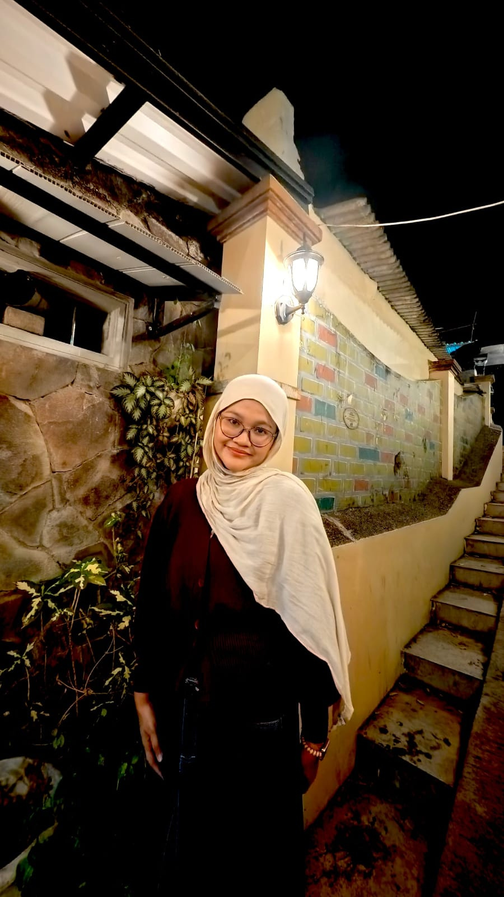

Menggabungkan Functional ERP & AI Specialist
Lulusan Informatika UPN Veteran Jawa Timur (IPK 3.84). Berpengalaman dalam konfigurasi workflow & sistem enterprise (iDempiere, SAP) serta pemodelan Machine Learning & Data Analytics.
3.84
IPK Akhir
95%
Akurasi Escalation Workflow SAP
Best Paper
SENATIKA 2025 (XGBoost)
=======
Avi Oktaviani, S.Kom.
Machine Learning, Data Analysis & ERP Specialist (iDempiere & SAP)
Lulusan Sarjana Ilmu Komputer UPN "Veteran" Jawa Timur (IPK 3.84/4.00). Memiliki pengalaman praktis dalam ERP Technical & Functional (iDempiere Customization, JAVA OSGi, PostgreSQL, Apache Kafka) serta administrasi fungsional SAP. Berpengalaman merancang model Machine Learning, Data Analytics, dan deployment sistem.
Pengalaman Kerja & Magang
ICT ERP Technical & Functional Intern
PT Bisi International Tbk
- Mengembangkan dan mengonfigurasi custom window & plugin Java/OSGi di iDempiere untuk otomatisasi kalkulasi bisnis.
- Mengintegrasikan mobile apps menggunakan Apache Kafka untuk sinkronisasi data operasional real-time.
- Mengelola struktur organisasi dan pengaturan SAP User Role & Authorization di 9 cabang regional.
- Mengonfigurasi multi-branch workflow approval di SAP dengan tingkat akurasi eskalasi hingga 95%.
IT Support & Evaluation Intern
Diskominfo Kabupaten Kediri
- Melakukan pengujian performa dan pembaruan pada 40+ website domain resmi pemerintah daerah.
- Melakukan analisis SPBE Domain 5 (Manajemen Risiko TI) dan menyusun mitigasi risiko. =======
- Mengembangkan dan mengonfigurasi custom window iDempiere untuk kebutuhan tim RnD PT BISI dan berhasil meningkatkan efisiensi waktu entri data 30% - 40%.
- Development komponen plugin kustom menggunakan JAVA OSGi untuk otomatisasi kalkulasi nilai bisnis & tanggal planning, meminimalisir risiko human error hingga 90%.
- Integrasi mobile apps menggunakan Apache Kafka untuk memastikan sinkronisasi data operasional secara realtime & asynchronous serta menjaga stabilitas server iDempiere.
- Merancang report view database dan tabel laporan dengan PostgreSQL untuk meningkatkan query response time sebesar 30% - 40%.
- Mengelola struktur organisasi departemen melalui sistem SAP dan merancang workflow approval SAP di 9 cabang dengan akurasi jalur eskalasi hingga 95%.
- Melakukan evaluasi dan pengujian pada website resmi Pemerintah Kabupaten Kediri sesuai standar SPBE untuk memastikan keamanan & performa sistem.
- Melakukan analisis SPBE Domain 5 (Manajemen Risiko) dan identifikasi ~10 potensi risiko TI, menganalisis dampak, serta menyusun rekomendasi mitigasi risiko untuk pengelolaan sistem informasi Pemda.
- Menyusun laporan hasil analisis dan evaluasi SPBE untuk kebutuhan penilaian internal pemerintah daerah.
- Mengembangkan model machine learning rekomendasi jenis tanaman berdasarkan kondisi cuaca (suhu, kelembapan, curah hujan) serta menerapkan clustering K-Means pada capstone project aplikasi "Cuaca Tani".
- Melakukan pengolahan data, membangun model prediksi berbasis statistik dan Machine Learning, serta menginterpretasikan hasil analisis data.
- Melakukan deployment model ke aplikasi sehingga dapat digunakan untuk proses prediksi langsung secara realtime. >>>>>>> 327efae (update)
Tentang Saya
Ringkasan Profil
Saya adalah Lulusan Sarjana Ilmu Komputer UPN "Veteran" Jawa Timur dengan IPK 3.84/4.00. Memiliki passion mendalam di bidang Machine Learning, Analisis Data, dan Enterprise Resource Planning (ERP).
Pengalaman magang praktis mencakup perancangan modul kustom ERP iDempiere (JAVA, PostgreSQL, Apache Kafka) di PT BISI International Tbk, administrasi SAP 9 cabang, evaluasi SPBE Manajemen Risiko TI di Diskominfo Kediri, serta program intensif Machine Learning Bangkit Academy (by Google, GoTo, Traveloka).
Penelitian tugas akhir saya berfokus pada optimasi Machine Learning XGBoost untuk klasifikasi gizi balita yang berhasil meraih penghargaan Best Paper pada SENATIKA-V 2025 Pekanbaru.
Pendidikan
S1 Ilmu Komputer
IPK 3.84 / 4.00
Fokus Utama
Machine Learning & ERP
Prestasi Terkini
Best Paper SENATIKA-V 2025
Pengalaman Kerja & Magang
PT BISI International Tbk
ICT ERP Technical & Functional Intern • Pare, Kediri
Dinas Komunikasi dan Informatika Kabupaten Kediri
IT Support Intern • Kediri, Indonesia
Bangkit Academy 2023 Batch 2
Machine Learning Cohort (Google, GoTo, Traveloka) • Online
Proyek Unggulan
iDempiere Multi-Stage Approval Workflow
Merancang 6-stage approval process dengan logika kondisi berbasis kategori anggaran (G02, G07) dan batasan nominal GrandTotal.
Optimasi XGBoost Grid Search (Gizi Anak)
Pengembangan model machine learning klasifikasi status gizi anak dengan teknik hyperparameter tuning XGBoost. Menang penghargaan Best Paper SENATIKA 2025.
SAP User Role & Authorization Management
Standardisasi data personil dan konfigurasi role-based access control (RBAC) terpusat untuk 9 cabang regional perusahaan.
Pendidikan & Kepemimpinan
Pendidikan Formal
Bachelor Degree
UPN "Veteran" Jawa Timur
IPK 3.84 / 4.00Bachelor of Computer Science (S.Kom) • Agu 2021 - Jan 2026
Tugas Akhir: Klasifikasi status gizi anak berbasis Machine Learning XGBoost dengan tuning Grid Search & Random Search (Akurasi Model: 89%).
Proyek Akademik: Diagnosis ISPA berbasis CBR (Minkowski Distance), Reduksi Dimensi Citra Daun Apel berbasis PCA mandiri, & K-Means Cuaca Pertanian.
Pengalaman Organisasi
Leadership & Kepanitiaan
Mobile Developer Community UPN "Veteran" Jatim
2023 - 2025Bendahara Komunitas
Mengelola anggaran tahunan komunitas, menyusun dokumen keuangan untuk pelaporan universitas, serta mencatat transaksi keuangan secara transparan.
Lokakarya "Bootcamp Internet of Things" 2022
Nov 2022Divisi Acara (Master of Ceremony / MC)
Diadakan BEM Fasilkom UPN. Memandu jalannya acara harian, mengelola rundown, tenggat waktu, dan koordinasi manajemen peserta.
Keterampilan Utama
Enterprise & Database
AI & Data Science
Proyek & Penelitian Highlight


Optimasi XGBoost Status Gizi Balita
Penelitian optimasi model XGBoost menggunakan hyperparameter Grid Search & Random Search untuk klasifikasi status gizi anak dengan akurasi 89%.


Custom ERP iDempiere & Kafka
Pengembangan custom window, plugin JAVA OSGi, serta integrasi Apache Kafka & PostgreSQL untuk sinkronisasi data realtime dan otomatisasi kalkulasi bisnis.


Aplikasi "Cuaca Tani" ML
Rekomendasi jenis tanaman berbasis prediksi cuaca (suhu, kelembapan, curah hujan) menggunakan algoritma K-Means Clustering & deployment model ke sistem mobile.

Sistem Diagnosis ISPA (CBR)
Sistem pakar mendiagnosis Infeksi Saluran Pernapasan Akut (ISPA) dengan pendekatan Case-Based Reasoning (CBR) menggunakan perhitungan Minkowski Distance.

PCA Reduksi Dimensi Citra Daun
Implementasi algoritma Principal Component Analysis (PCA) secara mandiri untuk reduksi dimensi fitur data citra serta pengenalan pola penyakit daun apel.
SAP Workflow & Department Structure
Enterprise Architecture Management
Pengelolaan struktur organisasi departemen dan merancang workflow approval transaksi SAP di 9 cabang operasional perusahaan hingga tingkat division head.
Keahlian & Kemampuan
Hard Skills & Technologies
Soft Skills & Karakter
Sertifikasi & Prestasi
Best Paper SENATIKA-V Pekanbaru
"Tuning Hyperparameter Grid Search untuk Optimasi XGBoost pada Klasifikasi Status Gizi Balita" (Information System and Technology).
BNSP - Junior Web Programmer Certification
BNSP Indonesia
Tahun Terbit: 2025
TensorFlow Developer Certification
TensorFlow / Google
Tahun Terbit: 2024
Machine Learning Specialization
DeepLearning.AI / Standford & Google
Tahun Terbit: 2023
Mathematics for Machine Learning & Data Science
DeepLearning.AI / Google
Tahun Terbit: 2023
Bangkit Academy Machine Learning Graduate
Google, GoTo, Traveloka & Dicoding Indonesia
Tahun Terbit: 2023 (Batch 2)
Hubungi Saya
Mari berdiskusi mengenai peluang kerja, proyek Machine Learning, atau implementasi ERP.
Email Direct
Email Saya
Profil Profesional
GitHub